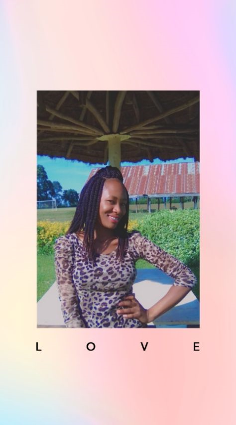
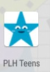

Esther is a full time adventurer obsessed with skills in designing websites. She heads up designing different websites and spends her time in learning coding across the globe.
My Projects
I have been engaged in development of the following projects
- Parenting app
- Covid 19 app